This is an international project spanning a wide network of researchers in various fields relevant to the project goals.
This project is supported by the Ian Ramsey Center for Science and Religion at the University of Oxford through ‘New Horizons for Science and Religion in Central and Eastern Europe’ initiative, and funded by the John Templeton Foundation.
Department of Philosophy at the University of Belgrade hosts the project, while Institute for Philosophy coordinates it. The Institute closely collaborates with Department of Archaeology and Faculty of Biology at the University of Belgrade, as well as with the Astronomical Observatory of Belgrade. (Department of Archeology and Astronomical Observatory are recipients of major grants awarded by the European Commission.)
Faculty of Philosophy, University of Belgrade
The Department of Philosophy at the University of Belgrade hosts the project, while the Institute for Philosophy coordinates it.

Ian Ramsey Centre for Science and Religion
The project is supported by the Ian Ramsey Centre for Science and Religion at the University of Oxford through the ‘New Horizons for Science and Religion in Central and Eastern Europe’ initiative.
John Templeton Foundation
The project is funded by the John Templeton Foundation.